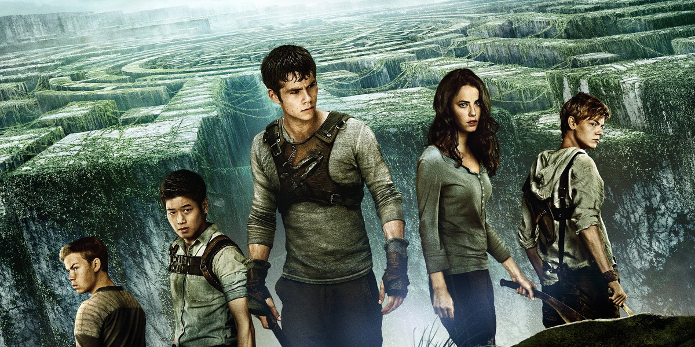
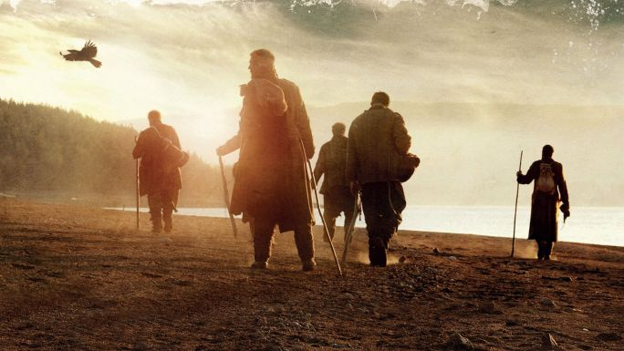

ПИДТИЛОК ДМИТРИЙ НИКОЛАЕВИЧ

Почему выбрали FrontEnd
- Стабильный спрос на эту специальность;
- Возможность работать удалённо;
- Наличие перспектив для развития.
Ссылка на ваш любимый сайт
Новости УкраиныРасскажите немного о себе:
Относительно высокого роста, волосы руссые, цвет глаз меняется от настроения, кушаю три раза в день.
Что ожидаю от курса:
Получение необходимых знаний, которые помогут в дальнейшем профессиональном развитии.
Интересные фильмы для просмотра:
"Бегущий в лабиринте"
Главный герой — подросток Томас, который просыпается в лифте, но ничего не помнит, кроме своего имени. Он оказывается среди 60 подростков, научившихся выживать в замкнутом пространстве. Раз в 30 дней прибывает новый мальчик. Группа ребят проживает в «Приюте» уже два года. Они кормятся тем, что удается вырастить на земле, и пытаются найти выход из лабиринта, окружающего их место жительства. Когда герои уже начинают терять надежду, появляется девочка в состоянии комы, но со странной запиской. Мир героев начинает меняться.
"По соображениям совести"
Медик Американской армии времён Второй Мировой войны Дезмонд Досс, который служил во время битвы за Окинаву, отказывается убивать людей и становится первым идейным уклонистом в американской истории, удостоенным Медали Почёта.
"Путь домой"
1940 год, Сибирь. Самый страшный лагерь для политзаключенных. Небольшая группа осужденных смогла вырваться из этого страшного места. Теперь их ждет путь домой.
Долгий, очень трудный, минуя пустыни и горы, сталкиваясь с дикими животными и незнакомыми людьми. Они идут домой из последних сил, надеясь на встречу со своими близкими.
"Зеленая миля"
Обвиненный в страшном преступлении, Джон Коффи оказывается в блоке смертников тюрьмы «Холодная гора». Вновь прибывший обладал поразительным ростом и был пугающе спокоен, что, впрочем, никак не влияло на отношение к нему начальника блока Пола Эджкомба, привыкшего исполнять приговор.